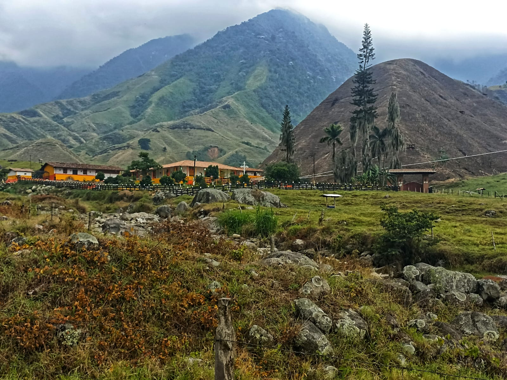
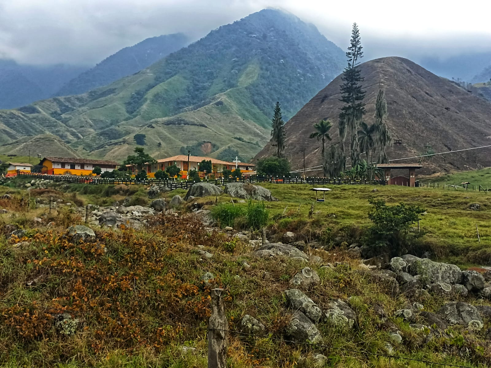

Charcos de Tapartó
Acabamos de desembarcar en uno de los 7 corregimientos del municipio de Andes, Villa
Cesar,
también conocido con el nombre de Tapartó que en idioma quechua significa
"agua que cae", y no es para menos, en esta localidad se encuentra una de las
caídas de agua más formidables del territorio antioqueño.
Después de un trayecto de 3 horas desde la ciudad de Medellín y una parada "técnica"
para desayunar en el corregimiento
de Peñalisa del municipio de Bolombolo, arribamos a este caluroso terruño.
Luego de realizar un pequeño estiramiento, que nos sacase del letargo en que veníamos, emprendimos nuestro viaje a pie hasta los chorros.
Saliendo del corregimiento nos topamos con los bellísimos paisajes habituales del suroeste antioqueño,
casonas rodeados de café, y plátano, prados verdes que hablan de la generosidad del suelo,
y de un río que los envuelve y no le pierde vista como una gran serpiente, que a pesar del fuerte
verano se mantiene fuerte y en algunos tramos caudalosos.


 

El paisaje que nos regala es digna de cualquier postal, montañas abarrotadas de café y más café, porque aquí se respira café por todos lados, transitamos por un caminito en condiciones aceptables, huérfano de cualquier vegetación alrededor que de abrigo o amparo del implacable sol, se siente una humedad sofocante en el aire, afortunadamente el cielo se apiadó de nosotros y nos regaló una brisa refrescante que por momentos nos hacía presagiar lo peor, 17 días de verano, y la noche anterior había comenzado a llover y la mañana no pintaba nada bien, después de hora y media de caminata arrimamos al Café del Río, una casa-finca adecuada como mekatiadero y restaurante encaramada en un repechito, y último eslabón residencial antes de los chorros, nos recibieron con esa hospitalidad propia de la gente de campo, nos brindaron guándolo para mitigar la sed e inmediatamente nos entregaron él "amansa-locos" un nutrido fiambre para recobrar energía.


Luego de un breve receso no dirigimos al mirador, que no es nada menos que el borde de una montaña donde se puede apreciar las estruendosas y brutales caídas de agua, por qué son varias, generando una ilusión óptica, da la sensación de estar presenciando una avalancha debido a la cantidad de agua que fluye por segundo, un agua de color turbio, producto de la erosión y los minerales de las rocas.
Posterior a esto bajamos hasta los charcos para disfrutar de las "refrescantes" aguas que nos ofrecía la naturaleza, y pudimos presenciar, de primera mano, su bravura, y ante tan monumental espectáculo solo cabe resaltar la pequeñez de la condición humana.